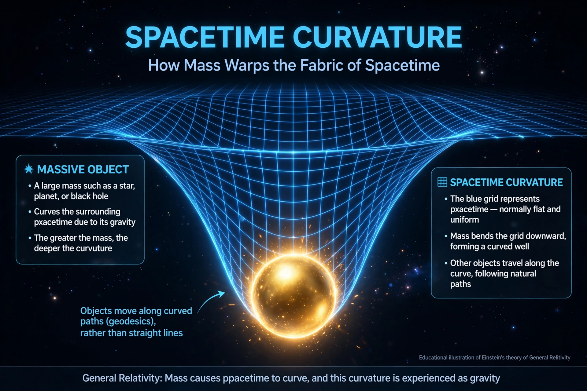

General relativity

[Diagram: a blue grid (spacetime) warped into a funnel by a heavy sphere representing a star]General relativity, also known as the general theory of relativity, is the geometric theory of gravitation published by Albert Einstein in 1915 and the current description of gravitation in modern physics. It generalises special relativity and Newton's law of universal gravitation, describing gravity as a geometric property of space and time — spacetime — whose curvature is directly related to the energy and momentum of whatever matter and radiation are present.
The theory's relation between curvature and content is specified by the Einstein field equations, named after Einstein:
John Archibald Wheeler summarised the theory memorably: spacetime tells matter how to move; matter tells spacetime how to curve.
History
Soon after publishing special relativity in 1905, Einstein began thinking about how to incorporate gravity. The key insight, which he called "the happiest thought of my life", came in 1907: a person in free fall does not feel their own weight — the equivalence principle. After years of work, assisted by the mathematics of Riemannian geometry learned from Marcel Grossmann, he presented the field equations to the Prussian Academy in November 1915, in competition with David Hilbert.
Consequences and evidence
The theory immediately explained the anomalous perihelion precession of Mercury's orbit. In 1919, expeditions led by Arthur Eddington photographed a solar eclipse and reported starlight deflected by the Sun by the predicted amount, making Einstein famous. Subsequent tests — gravitational redshift, Shapiro time delay, frame dragging measured by Gravity Probe B, and the orbital decay of binary pulsars — have all confirmed it, often to high precision.
Predictions that took longer to verify include black holes, gravitational lenses, an expanding universe (applied by Friedmann and Lemaître and observed by Hubble), and gravitational waves, detected directly by LIGO in 2015 from a merging pair of black holes — a result announced jointly with institutions including NASA-affiliated centres and awarded the Nobel Prize in 2017.
Applications
Though its effects are tiny in everyday life, general relativity is required for accurate satellite navigation: clocks on GPS satellites run faster than on Earth by about 38 microseconds a day from relativistic effects combined, and ignoring this would make positions drift by kilometres daily. The theory is also the foundation of modern cosmology, the study of the Milky Way's central black hole, and models of neutron stars.
Relation to quantum mechanics
General relativity and quantum mechanics — the two pillars of modern physics — remain unreconciled: general relativity breaks down at singularities such as inside black holes and at the Big Bang, where quantum effects dominate. Proposed unifications include string theory and loop quantum gravity, neither yet experimentally confirmed.